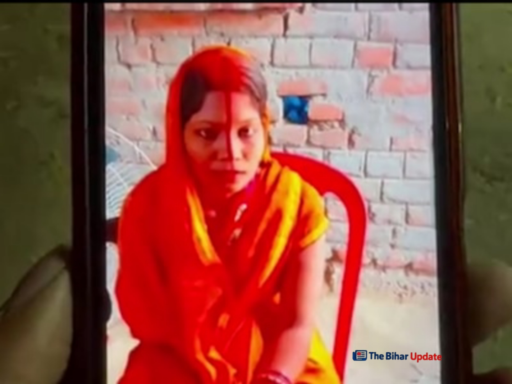

Bihar News Update Today
Welcome to The Bihar Update. Here you will get the latest and verified news from Bihar including local updates, education, jobs and government schemes.
Welcome to The Bihar Update. Here you will get the latest and verified news from Bihar including local updates, education, jobs and government schemes.
📍 पटना | 23 फरवरी 2026

बिहार सरकार बच्चों के मोबाइल स्क्रीन टाइम को नियंत्रित करने के लिए नई नीति लाने की तैयारी कर रही है। विशेषज्ञों से सलाह ली जा रही है और जल्द ही दिशा-निर्देश जारी हो सकते हैं।
Read Full News →📍 नवादा | 22 फरवरी 2026
नवादा जिले में 24 वर्षीय विवाहिता की संदिग्ध परिस्थितियों में मौत हो गई। मायके पक्ष ने ससुराल वालों पर 3 लाख रुपये की दहेज मांग और हत्या का आरोप लगाया है।
Read Full News →📍 पटना | 21 फरवरी 2026
बिहार में साइबर अपराध तेजी से बढ़ रहे हैं। पुलिस ने अनजान कॉल, फर्जी लिंक और ओटीपी साझा करने से बचने की सलाह दी है।
Read Full News →
औरंगाबाद के दाउदनगर में तिलक समारोह में शामिल होने आए 22 वर्षीय युवक की तेज रफ्तार ट्रक से दर्दनाक मौत। हादसे के बाद ग्रामीणों का फूटा गुस्सा, मुआवजे की मांग को लेकर सड़क जाम।

भोजपुर जिले में शादी समारोह के बाद दूल्हे के भाई समेत पांच लोगों की संदिग्ध मौत से इलाके में सनसनी फैल गई। पुलिस और एक्साइज विभाग मामले की जांच में जुटे हैं।

पटना जिले के मसौढ़ी में मैट्रिक परीक्षा के दौरान देर से पहुंचने पर छात्रा को प्रवेश नहीं मिला। घटना के बाद पूरे क्षेत्र में चिंता का माहौल है।
बिहार बोर्ड मैट्रिक परीक्षा 17 फरवरी से शुरू। 1,699 केंद्रों पर 15 लाख से अधिक छात्र शामिल। जानें परीक्षा के नियम और सुरक्षा व्यवस्था।

वैलेंटाइन डे के अवसर पर मंदिर परिसर में सादगीपूर्ण तरीके से विवाह आयोजित किया गया। परिवार और स्थानीय लोगों की मौजूदगी में धार्मिक रीति-रिवाजों के साथ कार्यक्रम सम्पन्न हुआ।
खाद्य एवं उपभोक्ता संरक्षण विभाग ने 33 लाख से अधिक राशन कार्डधारियों के नाम हटाने की प्रक्रिया शुरू कर दी है। संदिग्ध लाभुकों पर कार्रवाई तेज कर दी गई है और जिलों को सख्त निर्देश जारी किए गए हैं।

महाशिवरात्रि 2026 के अवसर पर नवादा के प्रसिद्ध गोवर्धन मंदिर में श्रद्धालुओं की भारी भीड़ देखने को मिली। सुबह से ही भक्तों की लंबी कतारें लगी रहीं और मंदिर परिसर भक्तिमय माहौल में डूबा नजर आया।

पटना के फूलवारीशरीफ में खुले नाले में गिरने से दो साल की मासूम बच्ची की मौत। सीसीटीवी फुटेज में घटना कैद, प्रशासन पर लापरवाही का आरोप।
14 फरवरी 2019 के पुलवामा हमले को सात वर्ष पूरे। बालाकोट एयरस्ट्राइक और अनुच्छेद 370 की समाप्ति के बाद जम्मू-कश्मीर में आतंकवाद के खिलाफ निर्णायक लड़ाई का यह दिन संकल्प दिवस बन चुका है…

कटिहार में इंस्टाग्राम से शुरू हुआ प्रेम संबंध ब्लैकमेल तक पहुंच गया। शादी से इनकार करने पर युवक ने फोटो वायरल करने की धमकी दी, जिसके बाद पुलिस ने मंडप से ही दूल्हे को गिरफ्तार कर लिया…
बिहार में वैलेंटाइन डे के मौके पर सादगीपूर्ण तरीके से विवाह संपन्न हुआ। धार्मिक रीति-रिवाजों के साथ कार्यक्रम आयोजित किया गया और स्थानीय लोगों ने नवविवाहित जोड़े को शुभकामनाएं दीं।
अररिया के फारबिसगंज स्थित एक निजी नर्सिंग होम में प्रशासनिक जांच के दौरान डॉक्टर और डिप्टी कलेक्टर के बीच विवाद और धक्का-मुक्की का मामला सामने आया है। घटना का वीडियो सोशल मीडिया पर तेजी से वायरल हो रहा है…

पटना में पारिवारिक विवाद के चलते भांजे ने अपने ही मामा पर बीच सड़क चाकू से हमला कर दिया। घटना के बाद इलाके में दहशत फैल गई और पुलिस ने आरोपी युवक को गिरफ्तार कर लिया है…

नवादा में ग्रामीण डॉक्टर की हत्या मामले में पुलिस ने 9 आरोपियों को गिरफ्तार किया है। जांच में आर्थिक लेन-देन और तकनीकी साक्ष्य सामने आए हैं...

बिहार लोक सेवा आयोग ने प्रतियोगी परीक्षाओं में आवेदन के लिए OTR और प्रोफाइल क्रिएशन अनिवार्य कर दिया है। जानें पूरी प्रक्रिया...

बिहार के कई जिलों में मौसम में बदलाव देखा जा रहा है। दिन में धूप तेज है जबकि सुबह और शाम हल्की ठंड बनी हुई है...

बिहार के एक रेलवे स्टेशन से सामने आए वीडियो ने महिला सुरक्षा को लेकर गंभीर सवाल खड़े कर दिए हैं…

नवादा की जिला एवं सत्र न्यायाधीश शिल्पी सोनी राज का बीती रात अचानक निधन हो गया। तबीयत बिगड़ने पर निजी अस्पताल में भर्ती कराया गया था, मौत के कारणों की जांच जारी है।
पूरी खबर पढ़ें →

नवादा जिले के इकौली गांव से दिल दहला देने वाली घटना सामने आई है…
पूरी खबर पढ़ें →
नवादा में इंटरमीडिएट परीक्षा के दौरान एक युवक को दूसरे परीक्षार्थी के स्थान पर परीक्षा देते हुए पकड़ा गया।
पूरी खबर पढ़ें →
नवादा जिले में भूमि विवाद को लेकर हुई हत्या के मामले में अदालत ने बड़ा फैसला सुनाया है। पिता और उसके दो पुत्रों को दोषी मानते हुए न्यायालय ने उम्रकैद की सजा सुनाई है।
पूरा पढ़ें →
नवादा में इंटर परीक्षा के दौरान कदाचार में 3 परीक्षार्थी निष्कासित।
पूरा पढ़ें →
नवादा के राजेंद्र नगर में हुई वृद्ध महिला की नृशंस हत्या का पुलिस ने खुलासा कर दिया है। जांच में बहू को साजिश का मास्टरमाइंड बताया गया है।
पूरा पढ़ें →
सुबह 10 बजे से दोपहर 2 बजे तक नवादा जिले में बिजली आपूर्ति बाधित रहेगी। 132/33 केवी ग्रिड में मेंटेनेंस कार्य के कारण शटडाउन लिया जाएगा…
पूरा पढ़ें →
2019 बैच के IAS अधिकारी दीपक कुमार मिश्रा को मुख्यमंत्री सचिवालय में संयुक्त सचिव बनाया गया है...
पूरा पढ़ें →